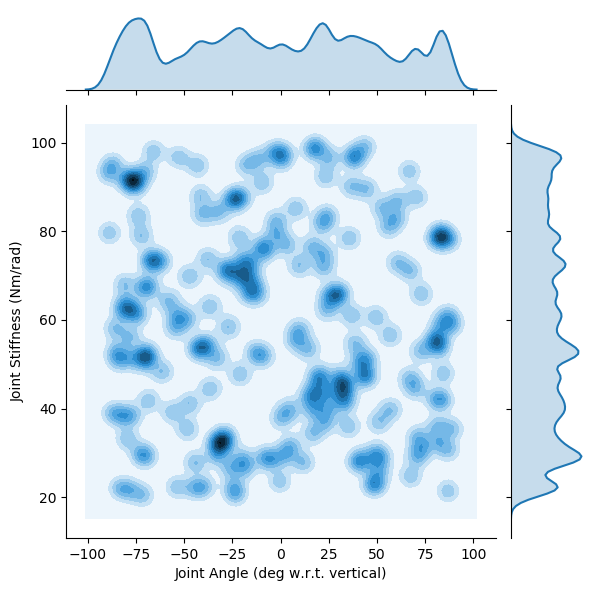
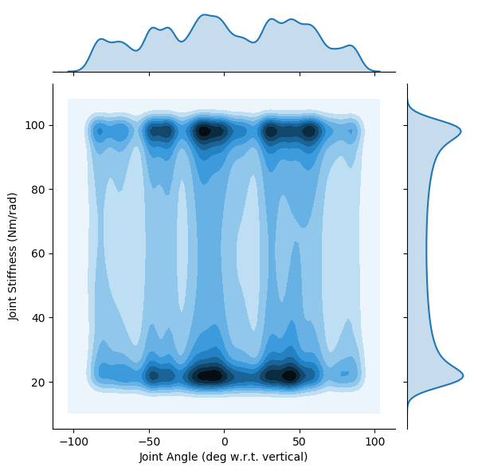
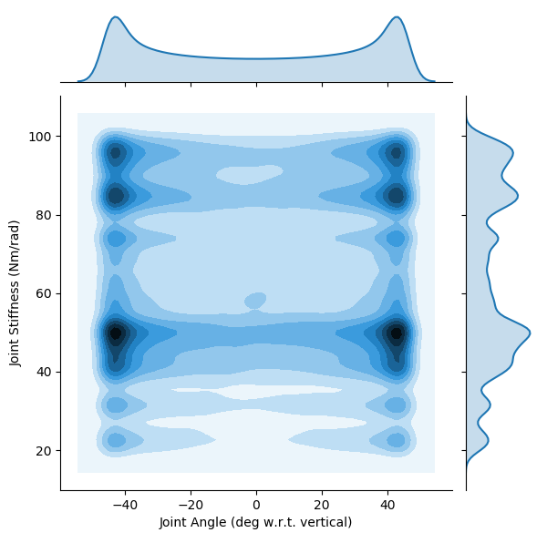
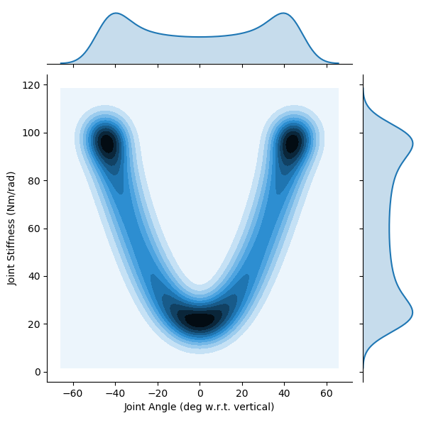

Trajectories Chosen to Test Generalizability of ANNs That Predict Joint Angles from Non-Collocated Sensory Information
Notes
Rerunning to show actual trajectory in histograms. Previous versions forced the bins to be between the maximum and minimum joint angles. Stiffness was not forced to be anywhere, so this is good news for the stiffness plots.
Parameters
Figures
Angle Step / Stiffness Step

Angle Step / Stiffness Sinusoid

Angle Sinusoid / Stiffness Step

Angle Sinusoid / Stiffness Sinusoid
